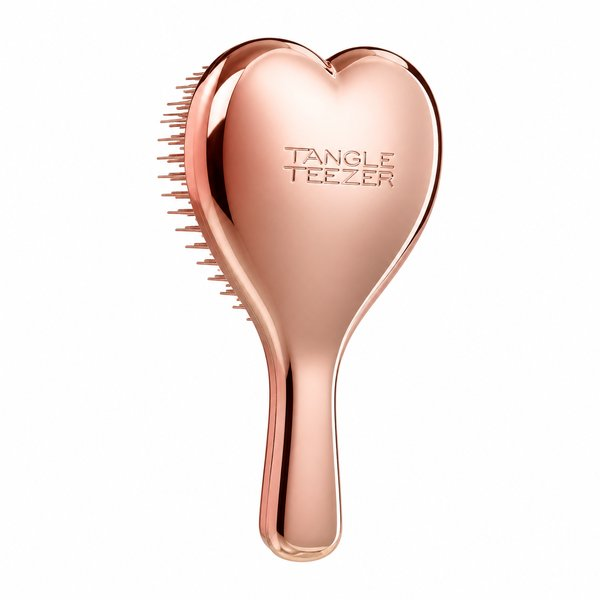
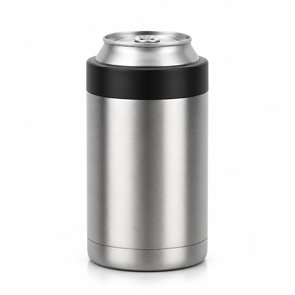
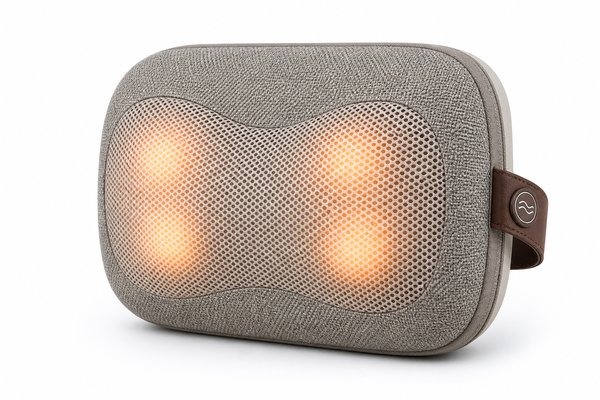
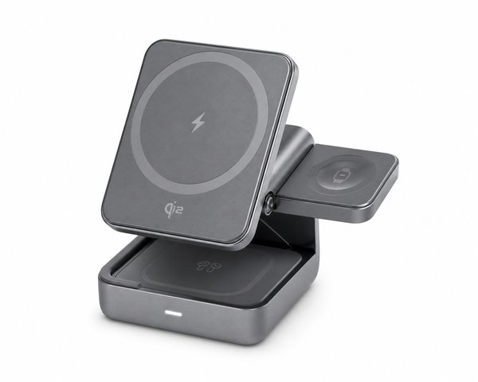
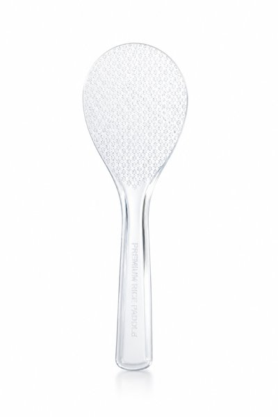
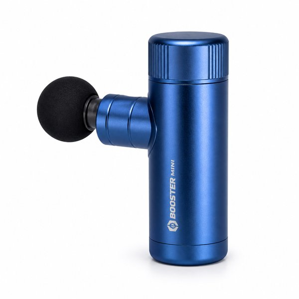
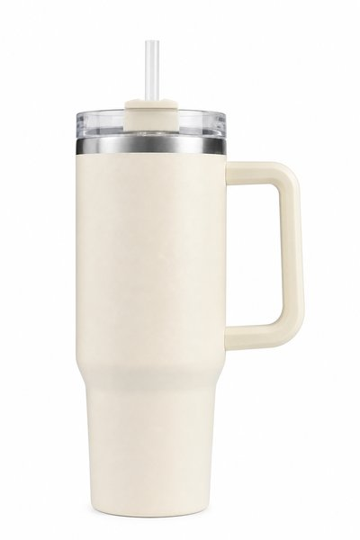
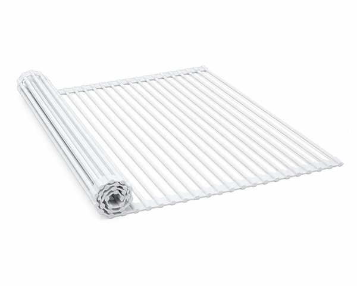
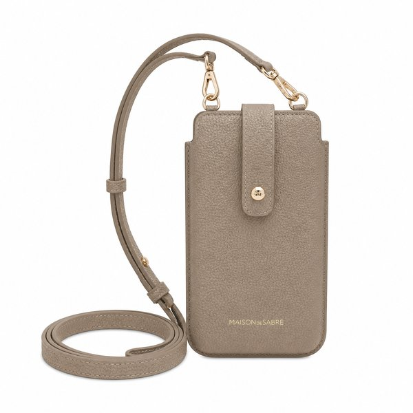
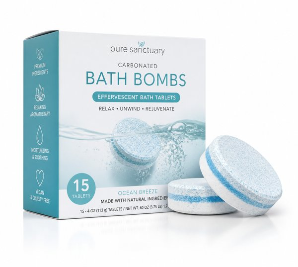

【2026年最新】SNS・TikTokでバズった！本当に買ってよかった神アイテム10選
TikTokやInstagramのリール動画で毎日流れてくる「買ってよかった便利グッズ」。気になるけれど、『本当に実用的なの？バズっているだけじゃない？』と慎重になりますよね。
実は、SNSで数万いいねを集めて爆発的に売れている商品の中には、使った瞬間に暮らしのストレスを劇的に減らしてくれる本物の名品が数多く眠っています。
本記事では、流行に敏感な編集部が実際に自腹購入して検証し、「これはバズるのも納得！」と心から感動した本当に実用的なバズり神アイテム10選を厳選してご紹介します。
- おすすめ10選 スペック・特徴比較表
- BEST 1｜リファ ハートブラシ（ReFa HEART BRUSH）
- BEST 2｜保冷缶ホルダー 350ml缶用 JCB-352
- BEST 3｜ルルド マッサージクッション ミニ AX-HCL318
- BEST 4｜3-in-1 キューブ with MagSafe ワイヤレス充電ステーション
- BEST 5｜極しゃもじ プレミアム クリア 自立タイプ
- BEST 6｜エクサガン ハイパー REG-04 超軽量マッサージガン
- BEST 7｜H2.0 真空スリムクエンチャー 0.88L 大容量タンブラー
- BEST 8｜折り畳み水切りラック Lサイズ シリコーントレー付き
- BEST 9｜イージー スマホショルダーストラップ レザー
- BEST 10｜バブ MIRAI beauty 炭酸バスタブレット レモングラス
- 【読者限定】無料体験キャンペーン
- まとめ：生活をラクにする最初の一歩
| 順位 | 商品名 | ブランド | 最大の特徴・おすすめ理由 | 総合評価 |
|---|---|---|---|---|
| BEST 1 | リファ ハートブラシ（ReFa HEART BRUSH） | ReFa（リファ） | ブラッシングするだけで寝癖や絡まりが一瞬でほどけて艶が出る | 4.9 ★ |
| BEST 2 | 保冷缶ホルダー 350ml缶用 JCB-352 | THERMOS（サーモス） | 缶をすぽっと入れるだけでぬるくならず冷蔵庫から出したての冷たさが持続 | 4.9 ★ |
| BEST 3 | ルルド マッサージクッション ミニ AX-HCL318 | ATEX（アテックス） | まるで人の手で揉まれているような心地よい回転・スピード変化 | 4.8 ★ |
| BEST 4 | 3-in-1 キューブ with MagSafe ワイヤレス充電ステーション | Anker（アンカー） | 公式MFi・Made for MagSafe認証取得で最大15Wの超高速ワイヤレス充電 | 4.9 ★ |
| BEST 5 | 極しゃもじ プレミアム クリア 自立タイプ | マーナ（marna） | 炊きたてのご飯粒が1粒もくっつかずサッとよそえる快感 | 4.9 ★ |
| BEST 6 | エクサガン ハイパー REG-04 超軽量マッサージガン | DOCTORAIR（ドクターエア） | 片手で軽々持てる超軽量設計で腕が全く疲れない | 4.8 ★ |
| BEST 7 | H2.0 真空スリムクエンチャー 0.88L 大容量タンブラー | STANLEY（スタンレー） | 0.88Lの大容量で氷を入れた冷たいドリンクが一日中キープできる | 4.8 ★ |
| BEST 8 | 折り畳み水切りラック Lサイズ シリコーントレー付き | 山崎実業（tower） | シンク上のデッドスペースを広大な調理・水切りスペースに拡張 | 4.9 ★ |
| BEST 9 | イージー スマホショルダーストラップ レザー | BONAVENTURA（ボナベンチュラ） | エルメス同等の名門タンナーの革を使用しており圧倒的な高級感 | 4.8 ★ |
| BEST 10 | バブ MIRAI beauty 炭酸バスタブレット レモングラス | 花王（Kao） | お湯がなめらかなとろみ湯になり極上のリラックスタイムを演出 | 4.7 ★ |
リファ ハートブラシ（ReFa HEART BRUSH）

TikTokや女子高校生・OL層を中心に大バズりした奇跡のヘアブラシ。握りやすいハート型フォルムが頭皮への圧力を自然に分散し、3段構造のピンが髪のからまりをやさしくほぐしながら一瞬で毛先までサラツヤにします。
- ブラッシングするだけで寝癖や絡まりが一瞬でほどけて艶が出る
- ハート型の専用カバー付きでピンが折れず持ち歩きに最適
- 3,000円前後の手頃な価格帯で自分用にもプレゼントにも大人気
- 人気カラー（ローズゴールド等）は売り切れやすい
保冷缶ホルダー 350ml缶用 JCB-352

350mlの缶ビールや炭酸飲料を缶のまま差し込むだけで、最後の一口までキンキンに冷えた状態をキープする魔法のホルダー。真空断熱構造で結露が一切出ないため、デスク作業やキャンプ、晩酌に欠かせません。
- 缶をすぽっと入れるだけでぬるくならず冷蔵庫から出したての冷たさが持続
- 結露が全く出ないのでコースター不要で机が水浸しにならない
- アウトドアやBBQ、車内でもドリンクホルダーに収まり活躍
- 缶専用のためグラスとして直接飲み物を注ぐ設計ではない
ルルド マッサージクッション ミニ AX-HCL318

ソファやデスクチェアに置くだけで、プロの揉み心地を再現する大ヒットマッサージクッション。温感ヒーター内蔵の4つの揉み玉が回転し、首・肩・腰・ふくらはぎの頑固なコリをじんわり温めながらほぐします。
- まるで人の手で揉まれているような心地よい回転・スピード変化
- インテリアに自然に溶け込む上質でおしゃれなファブリック素材
- 約1.4kgと軽量でリビングや寝室、オフィスへの移動もラクラク
- コンセント給電式のためコードの届く範囲で使用する必要がある
3-in-1 キューブ with MagSafe ワイヤレス充電ステーション

iPhone、Apple Watch、AirPodsの3台をこれ1つで同時に急速充電できる手のひらサイズのキューブ型充電器。デスクやベッドサイドの乱雑なケーブルが1本にまとまり、スタンバイモードの置き時計としても映えます。
- 公式MFi・Made for MagSafe認証取得で最大15Wの超高速ワイヤレス充電
- Apple Watch充電モジュールが収納式でコンパクトに折り畳める
- 高級感のあるマットグレー仕上げと適度な重量感で抜群の安定性
- 高機能なフラッグシップモデルのため価格帯はやや高め
極しゃもじ プレミアム クリア 自立タイプ

全農・お米マイスターと共同開発し、「本当にお米がくっつかない」とSNSで絶賛された奇跡のしゃもじ。フッ素樹脂加工のエンボスと薄い先端形状により、ご飯をつぶさずふんわり美しくよそえます。
- 炊きたてのご飯粒が1粒もくっつかずサッとよそえる快感
- 薄く滑らかなヘリ形状でご飯を切るようにほぐせる
- 食洗機対応で耐久性も高くいつでも清潔に使える
- 透明クリアタイプはキッチンの照明によって置き場所が見えにくい場合がある
エクサガン ハイパー REG-04 超軽量マッサージガン

わずか約220gとスマホ並みの軽さながら、毎分最大約3,000回のパワフル振動を誇る超小型ガン型マッサージ器。フェイスモードも搭載しており、肩やふくらはぎの筋膜リリースだけでなく顔周りのケアも可能です。
- 片手で軽々持てる超軽量設計で腕が全く疲れない
- 手のひらサイズでポーチやバッグに入れて出先や出張先にも携帯可能
- フェイス用を含む3種のアタッチメント付属で全身をケア
- 大型のプロ仕様マッサージガンに比べるとストローク長は控えめ
H2.0 真空スリムクエンチャー 0.88L 大容量タンブラー

アメリカのTikTokから火がつき日本でも品薄が続出した大容量真空断熱タンブラー。ストロー飲み、直飲み、カバーの3WAYフタ構造と人間工学に基づいたグリップハンドルで、1日の水分補給が劇的におしゃれで快適になります。
- 0.88Lの大容量で氷を入れた冷たいドリンクが一日中キープできる
- 底面がスリムになっており車のカップホルダーにすっきり収まる
- ストローがしっかり固定されこぼれにくい安心設計
- 満水時は重さがあるため長時間の徒歩移動にはやや不向き
折り畳み水切りラック Lサイズ シリコーントレー付き

シンクの上に渡して置くだけで作業スペースや水切りカゴに早変わりするロール式水切りラック。使わない時はクルクルと丸めてコンパクトに収納でき、キッチンの生活感を一瞬で排除できます。
- シンク上のデッドスペースを広大な調理・水切りスペースに拡張
- 丸めて端に寄せるだけでシンクを広々洗えて邪魔にならない
- シリコーントレー部分にスプーンや小物を置いても落ちない工夫
- シンクの奥行き寸法に合ったサイズ（S/L）を選ぶ必要がある
イージー スマホショルダーストラップ レザー

高級ヨーロピアンレザー（シュリンクレザー）を贅沢に使用した大人のスマホショルダーストラップ。どんなスマホケースにも挟むだけで装着でき、ポケットがない服装でも手ぶらでお出かけを楽しめます。
- エルメス同等の名門タンナーの革を使用しており圧倒的な高級感
- ケースを選ばずシートを挟むだけで全機種対応
- 肩に食い込みにくい絶妙な幅と上質なカラーバリエーション
- 革製品のため雨や水濡れには注意が必要
バブ MIRAI beauty 炭酸バスタブレット レモングラス

「美容液に浸かっているみたい」とバスタイム垢でバズった新世代の炭酸入浴剤。キメ細やかな炭酸泡とビタミン・保湿オイル成分がお湯に溶け込み、お風呂上がりの肌がもっちりスベスベになります。
- お湯がなめらかなとろみ湯になり極上のリラックスタイムを演出
- 天然精油をブレンドした爽やかで上品なレモングラス＆ローズの香り
- 炭酸の温浴効果で芯までポカポカ温まり寝付きが良くなる
- 一般的な大衆向け入浴剤に比べると1錠あたりの価格が少し高め
日々の暮らしや買い物を楽しむなら、人気雑誌1,000誌以上がスマホやタブレットで読み放題の「楽天マガジン」が圧倒的におすすめです！初回31日間は完全無料で、無料期間中に解約すれば料金は1円もかかりません。
＼ 読者負担0円！雑誌1,000誌読み放題 ／楽天マガジン 31日間無料お試しを詳しく見る →
💡 まとめ：生活をラクにする最初の一歩
SNSで話題になるアイテムは、見た目の可愛さだけでなく「日々の小さな不満をスマートに解決する工夫」が凝らされています。まずはギフトにも大人気の「リファ ハートブラシ」や、お酒好き必携の「サーモス保冷缶ホルダー」など、手頃な名品からその便利さを体感してみてください。
楽天市場では「5と0のつく日」や「お買い物マラソン」などのキャンペーンに合わせて購入すると、ポイント還元が最大化してお得に手に入ります。ぜひチェックしてみてくださいね。